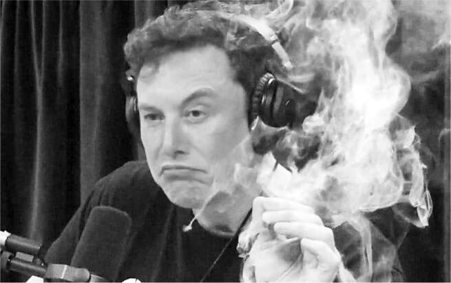
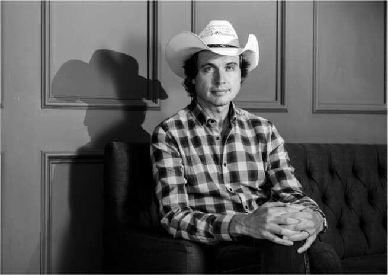

“Anh ổn chứ?”
David Gelles, một phóng viên kinh doanh của tờ New York Times, là một trong nhiều phóng viên theo đuổi câu chuyện về những biến cố năm 2018 của Musk. "Ông ấy phải nói chuyện với chúng tôi," anh nói với một người làm việc với Musk. Cuối chiều thứ Năm, ngày 16 tháng 8, Gelles nhận được một cuộc gọi. "Anh muốn biết gì?" Musk hỏi anh.
"Lúc đăng tweet đó, anh có dùng ma túy không?"
"Không," Musk trả lời. Ông nói rằng ông đã sử dụng thuốc ngủ kê đơn Ambien. Một số thành viên hội đồng quản trị lo lắng rằng ông đã lạm dụng nó.
Gelles nhận thấy Musk đang kiệt sức. Thay vì chất vấn ông bằng những câu hỏi hóc búa, anh quyết định cố gắng gợi chuyện. "Elon, anh thế nào rồi?" anh hỏi. "Anh ổn chứ?"
Cuộc trò chuyện kéo dài một giờ.
"Thực ra mọi chuyện không tốt lắm," Musk nói. "Tôi đã có những người bạn đến thăm vì họ thực sự lo lắng." Sau đó, ông im lặng một lúc lâu, xúc động. "Có những lúc tôi không rời nhà máy trong ba hoặc bốn ngày - những ngày tôi không ra ngoài," ông nói. "Điều này thực sự ảnh hưởng đến việc gặp gỡ các con của tôi."
Tờ Times được cho biết rằng Musk đã làm việc với nhà tài chính tai tiếng Jeffrey Epstein, người sau này bị kết án về tội buôn bán tình dục trẻ em. Musk phủ nhận điều đó. Thực tế, ông không có mối liên hệ nào với Epstein, ngoài việc Ghislaine Maxwell, kẻ tiếp tay cho Epstein, người mà Musk không quen biết, đã từng xuất hiện phía sau ông trong một bức ảnh tại Met Gala.
Gelles hỏi liệu mọi thứ có đang được cải thiện không. Musk nói, với Tesla thì có. "Nhưng về mặt nỗi đau cá nhân, điều tồi tệ nhất vẫn chưa đến." Giọng ông bắt đầu nghẹn lại. Có những khoảng lặng dài khi ông cố gắng lấy lại bình tĩnh. Như Gelles sau đó đã lưu ý, "Trong tất cả các cuộc trò chuyện tôi đã có với các nhà lãnh đạo doanh nghiệp trong những năm qua, chưa từng có một giám đốc điều hành nào bộc lộ sự yếu đuối như vậy cho đến khi Elon Musk gọi điện."
"Elon Musk tiết lộ những tổn thất cá nhân 'đau đớn' từ sự hỗn loạn của Tesla," tiêu đề viết. Câu chuyện kể lại cách ông nghẹn ngào trong cuộc phỏng vấn. "Ông Musk xen lẫn giữa tiếng cười và nước mắt," Gelles và các đồng nghiệp của ông viết. "Ông nói rằng ông đã làm việc tới 120 giờ một tuần gần đây… [và] không nghỉ quá một tuần kể từ năm 2001, khi ông nằm liệt giường vì bệnh sốt rét." Các tổ chức khác đã đăng lại câu chuyện. "Cuộc phỏng vấn thất thường với NYT dấy lên lo ngại về sức khỏe của Giám đốc Tesla," là tiêu đề trên Bloomberg.
Sáng hôm sau, cổ phiếu Tesla giảm 9%.
Sau những câu chuyện về tình trạng tâm lý bất ổn của mình, Juleanna Glover, chuyên gia tư vấn quan hệ công chúng của Musk, đã khuyên anh nên làm rõ vấn đề bằng một cuộc phỏng vấn dài. "Chúng ta cần dập tắt những đồn đoán vô căn cứ về tâm trạng của anh", cô viết. Cô cho biết sẽ đưa ra "những lựa chọn để anh thể hiện một cách trọn vẹn — lãnh đạo các công ty, nắm quyền điều hành, dí dỏm và tự nhận thức". Cô cũng đưa ra lời cảnh báo: "Dù trong bất kỳ hoàn cảnh nào, việc anh tiếp tục suy nghĩ về những khuynh hướng tình dục của một thợ lặn Thái Lan đã xúc phạm anh là không thể chấp nhận được."
Nơi Musk chọn để dập tắt những suy đoán rằng anh ta đã mất kiểm soát là podcast được phát trực tiếp của Joe Rogan, một chuyên gia am hiểu và sắc sảo, diễn viên hài, và (hơi quá phù hợp) bình luận viên của Giải vô địch đối kháng đỉnh cao, người thích đi lang thang qua những bãi mìn với khách mời của mình, bất chấp sự đúng mực về chính trị và gây tranh cãi. Rogan để khách mời của mình nói tự do, và Musk đã làm như vậy, trong hơn hai tiếng rưỡi. Anh mô tả cách tạo ra một bộ xương ngoài giống như rắn khi xây dựng đường hầm. Anh suy ngẫm về mối đe dọa của trí tuệ nhân tạo, liệu robot có trả thù chúng ta hay không, và Neuralink có thể tạo ra kết nối băng thông rộng trực tiếp giữa tâm trí và máy móc của chúng ta như thế nào. Và họ đã thảo luận về việc con người có thể là những hình đại diện vô thức trong một trò chơi điện tử mô phỏng được tạo ra bởi một trí thông minh cao hơn.
Những suy tư này có vẻ không phải là cách hoàn hảo để Musk thuyết phục các nhà đầu tư tổ chức rằng anh ta nắm chắc thực tế cơ bản, nhưng ít nhất cuộc phỏng vấn dường như sẽ không gây hại gì. Nhưng sau đó, Rogan châm một điếu cần sa lớn "cần sa bên trong thuốc lá" và mời Musk hút.
"Chắc anh không thể hút vì cổ đông, phải không?", Rogan nói, cho Musk một lối thoát.
"Ý tôi là, nó hợp pháp mà đúng không?", Musk trả lời. Họ đang ở California.
"Hoàn toàn hợp pháp", Rogan nói, đưa điếu thuốc. Musk rít một hơi thử, tinh nghịch.
Một lúc sau, khi họ đang nói về vai trò của các thiên tài trong việc thúc đẩy nền văn minh, Musk quay sang nhìn điện thoại của mình. "Anh đang nhận tin nhắn từ các cô gái à?", Rogan hỏi.
Musk lắc đầu. "Tôi đang nhận tin nhắn từ bạn bè nói, 'Anh đang làm cái quái gì vậy, hút cần sa?'"
Trang nhất của tờ Wall Street Journal ngày hôm sau trông không giống bất kỳ trang nào mà tờ báo từng đăng. Nó có một bức ảnh rất lớn về Musk, với đôi mắt đờ đẫn và nụ cười nhếch mép, cầm điếu cần sa béo trên tay trái với một làn khói lượn lờ quanh đầu. "Giá cổ phiếu của Tesla Inc. đã giảm xuống gần mức thấp nhất trong năm vào thứ Sáu sau khi nhà sản xuất ô tô điện mất thêm nhiều giám đốc điều hành và Giám đốc điều hành Elon Musk dường như hút cần sa trong một cuộc phỏng vấn được phát trực tuyến trên web", phóng viên Tim Higgins viết.
Musk có thể không vi phạm luật tiểu bang, nhưng ngoài việc làm rung chuyển các nhà đầu tư, anh ta dường như đã vi phạm các quy định của liên bang, dẫn đến một cuộc điều tra của NASA. "SpaceX là một nhà thầu của NASA, và họ rất tin vào luật pháp", Musk nói. "Vì vậy, tôi đã phải trải qua các cuộc kiểm tra ma túy ngẫu nhiên trong vài năm. May mắn thay, tôi thực sự không thích sử dụng ma túy bất hợp pháp."
Musk đã đến trường quay của Joe Rogan với một món quà cho người dẫn chương trình podcast của mình: một khẩu súng phun lửa bằng nhựa có logo của The Boring Company trên đó. Họ cùng nhau chơi với món đồ chơi, vui vẻ bắn ngọn lửa propan ngắn của nó khi Sam Teller và nhân viên trường quay né tránh và cười.
Hình ảnh súng phun lửa là một ẩn dụ khá chính xác cho Musk. Anh ta thích thú với việc buông ra những lời bình luận gây sốc. Ý tưởng này đến sau khi công ty bán mũ "Boring Company" và cháy hàng mười lăm nghìn chiếc. "Tiếp theo là gì?" Musk hỏi. Ai đó đề xuất súng phun lửa đồ chơi. "Trời ơi, làm thôi," Musk đáp. Anh là một fan của bộ phim Spaceballs, một phim nhại Star Wars của Mel Brooks, có cảnh một nhân vật giống Yoda chào hàng các sản phẩm của bộ phim, kết thúc bằng câu thoại "Hãy mang súng phun lửa về nhà." Các con của Musk rất thích câu thoại đó.
Steve Davis, người điều hành The Boring Company, đã tìm thấy một nguyên mẫu tương đối an toàn có thể làm tan tuyết và đốt cỏ dại nhưng về mặt kỹ thuật không đủ nóng để bị coi là súng phun lửa. Họ bắt đầu tiếp thị nó, một cách hài hước, là "không phải súng phun lửa" để tránh vi phạm pháp luật. Các điều khoản và điều kiện tuyên bố:
Tôi sẽ không sử dụng cái này trong nhà Tôi sẽ không chĩa cái này vào vợ / chồng tôi Tôi sẽ không sử dụng cái này một cách không an toàn Công dụng tốt nhất là làm bánh creme brulee… … và hết khả năng gieo vần của chúng tôi rồi.
Họ định giá nó ở mức 500 đô la (bây giờ giá trên eBay gấp đôi) và trong vòng bốn ngày đã bán được hai mươi nghìn chiếc, thu về 10 triệu đô la.
Chế độ khùng điên của Musk là mặt trái của chế độ quỷ dữ của anh ta. Khi ở trong những nơi tăm tối nhất, anh ta thường luân phiên giữa cơn giận dữ và tiếng cười khúc khích.
Sự hài hước của anh ta có nhiều cấp độ. Thấp nhất là sự thích thú trẻ con của anh ta với biểu tượng cảm xúc phân, âm thanh đánh rắm được lập trình trong Tesla và những trò đùa nhà vệ sinh khác. Nói lệnh thoại "Mở lỗ đít" với bảng điều khiển trong xe Tesla, và nó sẽ mở cổng sạc điện ở phía sau xe.
Anh ta cũng có một kiểu hài hước châm biếm, mỉa mai, được thể hiện qua tấm áp phích trên tường của buồng làm việc của anh ta tại SpaceX. Nó cho thấy một bầu trời xanh đậm lấp lánh với một ngôi sao băng. "Khi bạn ước trên một ngôi sao rơi, ước mơ của bạn có thể thành hiện thực," nó viết. "Trừ khi nó thực sự là một thiên thạch lao xuống Trái đất sẽ hủy diệt tất cả sự sống. Khi đó bạn coi như xong đời, bất kể bạn ước gì. Trừ khi cái chết đến từ thiên thạch."
Kiểu hài hước ăn sâu nhất của anh ta là sự thông minh dí dỏm kiểu khoa học siêu hình mà anh ta tiếp thu khi đọc đi đọc lại cuốn The Hitchhiker's Guide to the Galaxy của Douglas Adams. Giữa cơn hỗn loạn năm 2018, anh quyết định phóng chiếc Tesla Roadster màu đỏ anh đào cũ của mình vào không gian sâu trên quỹ đạo mà sau bốn năm, nó sẽ đưa nó đến gần Sao Hỏa. Anh ta đã làm điều đó trong lần phóng đầu tiên của tên lửa Falcon Heavy mới, một tên lửa hai mươi bảy động cơ được chế tạo bằng cách ghép ba tên lửa đẩy Falcon 9 lại với nhau. Chiếc Tesla có một bản sao của The Hitchhiker's Guide trong ngăn đựng găng tay và một tấm biển trên bảng điều khiển với dòng chữ "ĐỪNG HOẢNG SỢ!" từ cuốn tiểu thuyết.
Trong thời thơ ấu khó khăn và khi là đối tác trong Zip2, Kimbal và Elon thường xuyên cãi vã dữ dội. Nhưng qua tất cả, Kimbal vẫn là người bạn đồng hành thân thiết nhất của Elon, người hiểu anh và sẽ luôn ở bên anh, ngay cả khi nói với anh những sự thật khó nghe.
Sau khi được Antonio Gracias gọi về từ tuần trăng mật vào tháng 7, Kimbal làm việc gần như toàn thời gian tại Tesla, bỏ bê cả chuỗi nhà hàng "từ nông trại đến bàn ăn" mà anh đã gây dựng ở Colorado. Trong suốt cuộc khủng hoảng với SEC, anh là một trong những người mạnh mẽ nhất thúc giục Elon dàn xếp. Và khi Elon lo sợ rằng một số thành viên hội đồng quản trị đang âm mưu chống lại mình, Kimbal đã bay xuống Los Angeles để ở bên anh. Trong một cuộc họp căng thẳng vào thứ Bảy tại nhà Elon, Kimbal đã làm điều mà anh vẫn thường làm sau vụ phóng tên lửa Falcon thất bại ở Kwaj và nhiều lần khác, đó là xoa dịu căng thẳng bằng cách nấu ăn. Lần này anh làm món cá hồi với đậu Hà Lan và món thịt hầm khoai tây hành tây.
Tuy nhiên, sự thất vọng của Kimbal với anh trai mình ngày càng tăng, đặc biệt là khi phải nhờ đến người ngoài thuyết phục Elon mới chịu dàn xếp với SEC. Điểm bùng phát xảy ra vào tháng 10. Tập đoàn nhà hàng của anh đang gặp vấn đề về tài chính và anh cần huy động thêm vốn. "Vì vậy, tôi đã gọi cho Elon và nói: 'Anh này, em cần anh giúp đỡ tài trợ cho công việc kinh doanh của em'." Vòng gọi vốn dự kiến khoảng 40 triệu đô la, và Kimbal cần Elon cho vay 10 triệu đô la. Ban đầu Elon đồng ý. Kimbal nhớ lại: "Tôi đã viết trong nhật ký của mình, 'tình yêu vô điều kiện dành cho Elon'." Nhưng khi Kimbal liên hệ để chuyển tiền, Elon đã thay đổi ý định. Jared Birchall, quản lý tài chính cá nhân của Elon, đã xem xét các con số và khuyên Elon rằng việc kinh doanh của Kimbal không bền vững. Birchall nói với tôi: "Số tiền Elon đầu tư vào đó đang bị đổ xuống sông xuống biển". Vì vậy, Elon đã báo tin xấu cho Kimbal: "Quản lý tài chính của anh đã xem xét rồi, và các nhà hàng đang gặp khó khăn. Anh nghĩ chúng nên đóng cửa thôi."
"Anh vừa nói gì vậy?", Kimbal hét lên. "Khốn kiếp! Mẹ kiếp! Không phải như vậy đâu." Anh gay gắt nhắc nhở Elon rằng khi tài chính của Tesla gặp khó khăn, anh đã đến làm việc bên cạnh anh trai mình và hỗ trợ tài chính cho anh ấy. Kimbal nói: "Nếu anh xem xét tình hình tài chính của Tesla lúc đó, nó cũng nên chết rồi. Vậy nên không phải như vậy đâu."
Cuối cùng Elon cũng nhượng bộ. Kimbal nói: "Về cơ bản, tôi đã ép anh ấy phải bỏ ra 5 triệu đô la." Các nhà hàng đã sống sót. Nhưng sự việc này vẫn gây ra một vết rạn nứt. Anh nói: "Tôi vô cùng tức giận với Elon và không nói chuyện với anh ấy. Tôi cảm thấy như mình đã mất anh trai. Trải nghiệm ở Tesla đã đưa anh ấy đến một nơi mà anh ấy mất trí. Lúc đó tôi đã nghĩ, 'Tôi xong với anh rồi'."
Sau sáu tuần im lặng, Kimbal đã chủ động hàn gắn mối quan hệ. Anh nói: "Tôi quyết định trở lại làm em trai của Elon vì tôi không muốn mất anh ấy. Tôi nhớ anh trai mình." Tôi hỏi Elon phản ứng thế nào khi anh liên lạc với anh ấy. Kimbal nói: "Anh ấy trả lời như thể chưa có chuyện gì xảy ra. Elon là vậy đấy."
Không có gì ngạc nhiên khi nhiều giám đốc điều hành hàng đầu của Musk đã rời đi trong giai đoạn "địa ngục sản xuất" năm 2018 và tình trạng hỗn loạn kèm theo. Jon McNeill, chủ tịch Tesla phụ trách bán hàng và tiếp thị, đã đảm nhận vai trò giúp Musk vượt qua những cơn đau khổ về tinh thần, kể cả khi ông nằm trên sàn phòng họp. "Nó trở nên vô cùng mệt mỏi đối với tôi", ông nói. Ông đã đến gặp Musk vào tháng 1 năm 2018, thúc giục ông tìm kiếm sự giúp đỡ về tâm lý và nói: "Tôi yêu anh, nhưng tôi không thể làm điều này nữa."
Doug Field, phó chủ tịch cấp cao về kỹ thuật, được coi là một CEO tương lai tiềm năng của Tesla. Nhưng Musk đã mất niềm tin vào ông khi bắt đầu giai đoạn tăng tốc sản xuất và tước bỏ vai trò giám sát sản xuất của ông. Ông đã rời đi để đến Apple và sau đó là Ford.
Sự ra đi quan trọng nhất, ít nhất là về mặt biểu tượng và tình cảm, là của JB Straubel, người đồng sáng lập vui vẻ đã gắn bó với Musk mười sáu năm, kể từ bữa tối năm 2003, nơi Straubel đã ca ngợi khả năng sử dụng pin lithium-ion để chế tạo ô tô điện. Cuối năm 2018, anh đã có một kỳ nghỉ dài, kỳ nghỉ thực sự đầu tiên sau mười lăm năm. Anh chia sẻ: "Mức độ hạnh phúc của tôi khá thấp và đang có xu hướng giảm xuống." Anh cảm thấy vui vẻ hơn nhiều từ một dự án phụ mà anh đã thành lập, Redwood Materials, với mục tiêu tái chế pin lithium-ion cho ô tô. Một yếu tố khác là tâm trạng của Musk vào thời điểm đó. Straubel nói: "Anh ấy đang gặp khó khăn, và điều đó khiến anh ấy thất thường hơn cả bình thường. Tôi cảm thấy rất tệ cho anh ấy và đã cố gắng giúp đỡ anh ấy như một người bạn, nhưng thực sự không thể."
Musk thường không đa cảm về việc mọi người rời đi. Ông thích những người mới. Ông quan tâm nhiều hơn đến một hiện tượng mà ông gọi là "giàu có nhờ điện thoại", nghĩa là những người đã làm việc tại công ty trong một thời gian dài và, vì họ có đủ tiền và nhà nghỉ dưỡng, nên không còn khao khát ở lại cả đêm trong nhà máy. Nhưng trong trường hợp của Straubel, Musk cảm thấy tình cảm cá nhân cũng như sự tin tưởng về chuyên môn. Straubel nói: "Tôi hơi ngạc nhiên trước sự miễn cưỡng của Elon khi để tôi rời đi."
Trong suốt đầu năm 2019, họ đã có nhiều cuộc trò chuyện, và Straubel đã trải qua những dao động cảm xúc thất thường của Musk. Straubel nói: "Anh ấy có thể thay đổi, thường là không báo trước, từ việc khá tình cảm và con người đến việc hoàn toàn không có chút nào như vậy. Đôi khi anh ấy có thể cảm thấy cực kỳ yêu thương và quan tâm, đến mức gây sốc, và bạn sẽ nghĩ, 'Ôi trời ơi, đúng vậy, chúng ta đã cùng nhau trải qua những khó khăn đáng kinh ngạc và có mối liên kết sâu sắc này và tôi yêu anh, người anh em.' Nhưng sau đó, nó lại hòa lẫn với ánh mắt trống rỗng đó, nơi mà bạn cảm thấy như anh ấy đang nhìn thấu bạn và không hề biểu lộ bất kỳ cảm xúc nào."
Kế hoạch mà họ đưa ra là công bố sự ra đi của Straubel tại cuộc họp thường niên tháng 6 năm 2019 của Tesla, được tổ chức tại Bảo tàng Lịch sử Máy tính gần Palo Alto. Với địa điểm này, đó sẽ là cơ hội để nhìn lại lịch sử của Tesla, từ một giấc mơ mười sáu năm trước cho đến người tiên phong giờ đã có lãi trong kỷ nguyên xe điện. Sau đó, họ sẽ giới thiệu người kế nhiệm Straubel, Drew Baglino, một cựu chiến binh mười hai năm của công ty. Straubel và Baglino có cùng ngôn ngữ cơ thể và phong thái gầy gò, vụng về, và tình cảm của họ rất sâu đậm.
Trong phòng chờ ngay trước sự kiện, Musk đã suy nghĩ lại về việc công bố sự ra đi của Straubel. "Tôi có linh cảm xấu về việc này," ông nói. "Tôi không nghĩ chúng ta nên làm điều đó hôm nay." Straubel thầm thở phào nhẹ nhõm. Đối mặt với sự ra đi của mình thật khó khăn về mặt cảm xúc.
Musk đã thực hiện phần đầu tiên của bài thuyết trình một mình. "Đó là một năm khó khăn," ông bắt đầu, một cụm từ đúng trên nhiều phương diện. Model 3 hiện đang bán chạy hơn tất cả các đối thủ cạnh tranh cộng lại - xăng hoặc điện - trong phân khúc xe sang, và nó là chiếc xe có doanh thu cao nhất trong số bất kỳ chiếc xe nào ở Mỹ. "Mười năm trước, không ai tin điều đó có thể xảy ra," ông nói. Sự hài hước chóng vánh của ông lóe lên trong giây lát. Ông bắt đầu cười khúc khích về "ứng dụng đánh rắm" cho phép người lái Tesla nhấn nút để ghế hành khách phát ra âm thanh đánh rắm khi ai đó ngồi lên đó. "Nó có lẽ là tác phẩm tuyệt vời nhất của tôi," ông nói.
Ông cũng một lần nữa khẳng định xe Tesla tự lái sắp thành hiện thực. "Chúng tôi dự kiến sẽ hoàn thiện tính năng tự lái vào cuối năm nay", ông nói, bổ sung năm 2019 vào danh sách những năm lời hứa này được đưa ra. "Xe sẽ có thể tự động di chuyển từ gara nhà bạn đến chỗ đậu xe ở công ty mà không cần bất kỳ sự can thiệp nào." Một khán giả đặt câu hỏi, thách thức ông về những lời hứa trước đây về xe tự lái chưa thành hiện thực. Musk cười, thừa nhận người hỏi đúng. "Vâng, đôi khi tôi hơi lạc quan quá về thời gian", ông nói. "Đã đến lúc bạn biết điều đó rồi. Nhưng nếu không lạc quan thì tôi làm việc này để làm gì chứ?" Khán giả vỗ tay. Họ thích thú với câu nói đùa đó.
Khi ông mời Straubel và Baglino lên sân khấu, tiếng reo hò vang dội. Đối với người hâm mộ Tesla, họ là những ngôi sao được yêu mến. Straubel nói với tình cảm chân thành: "Drew đã tham gia nhóm của tôi khi đó chỉ là một nhóm nhỏ năm hoặc mười người, vài năm sau khi công ty khởi nghiệp, và anh ấy là cánh tay phải của tôi trong hầu hết mọi sáng kiến quan trọng mà tôi đã thực hiện tại công ty." Đây là thời điểm Straubel định công bố nghỉ hưu. Thay vào đó, Straubel và Musk lại cùng nhau ôn lại kỷ niệm. "Tôi nhớ lại Tesla vào năm 2003, khi JB và tôi ăn trưa với Harold Rosen", Musk nói. "Đúng vậy, đó là một cuộc trò chuyện thú vị."
"Chúng tôi không hình dung được mọi chuyện sẽ diễn ra như thế này", Straubel nói thêm.
"Tôi đã tin chắc chắn rằng chúng tôi sẽ thất bại", Musk nói. "Vào năm 2003, mọi người nghĩ rằng xe điện là thứ ngu ngốc nhất, tệ hại về mọi mặt, giống như một chiếc xe golf."
"Nhưng điều đó cần phải được thực hiện", Straubel nói.
Trong một cuộc họp báo cáo kết quả kinh doanh vài tuần sau đó, Musk bất ngờ thông báo Straubel sẽ rời đi. Nhưng sự tôn trọng của Musk dành cho ông vẫn còn. Năm 2023, ông đã mời Straubel tham gia hội đồng quản trị của Tesla.

Trên chương trình Joe Rogan (trên); Kimbal (dưới)

Trên chương trình Joe Rogan (trên); Kimbal (dưới)